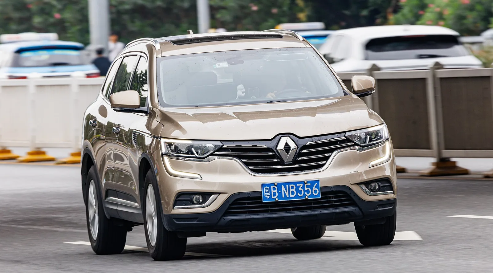

▲ 차량용 LPG 탱크(봄베). 원통형은 트렁크 공간을 크게 차지한다
2019년 3월, LPG 자동차의 사용 제한이 폐지됐습니다.
그전까지 일반인은 LPG 승용차를 살 수 없었습니다. 장애인, 국가유공자, 택시 기사, 렌터카 사업자만 가능했습니다.
이제는 누구나 살 수 있습니다. 그런데 "살 수 있다"와 "사는 게 이득이다"는 다른 문제입니다.
1. 2019년에 무엇이 바뀌었나
LPG 자동차는 오랫동안 '아무나 살 수 없는 차'였습니다. 연료에 붙는 세금이 낮아 특정 계층과 사업용에만 허용해 왔기 때문입니다.
| 구분 | 2019년 3월 이전 | 이후 |
|---|---|---|
| 일반인 구매 | 승용 불가 | 전 차종 가능 |
| 구매 가능 대상 | 장애인·국가유공자·택시·렌터카 사업자 등 | 제한 없음 |
| 일반인 예외 | 경차, 7인승 이상, 승합·트럭, 5년 이상 중고 | — |
| 개조 | 제한 | 허용 |
폐지의 명분은 미세먼지였습니다. LPG는 경유차에 비해 미세먼지 배출이 현저히 적습니다. 경유차 수요를 LPG로 돌리자는 정책 판단이었습니다.
2. 연료비는 싸다 — 다만 계산이 필요하다
LPG의 최대 장점은 연료 단가입니다. 휘발유 대비 30~40%가량 저렴합니다.
그런데 여기서 많은 사람이 계산을 한 번 건너뜁니다. 단가가 30% 싸다고 연료비가 30% 줄지 않습니다. LPG는 열량이 낮아 같은 거리를 가는 데 더 많이 씁니다.
📍 따져야 할 것은 L당 가격이 아니라 km당 비용
예를 들어 같은 차의 휘발유 사양이 12km/L, LPG 사양이 9km/L라면 연료 소모량이 약 1.33배입니다. 단가가 35% 싸더라도 이 차이를 곱하면 실제 절감폭은 기대보다 줄어듭니다. 정확한 비교는 내 차종의 공인연비와 그날의 지역 유가로 계산해야 합니다.
그래도 대체로 LPG 쪽이 쌉니다. 다만 그 폭은 "단가 차이"가 아니라 "단가 차이 ÷ 연비 차이"라는 점을 알고 접근해야 합니다.
3. 트렁크를 얼마나 잃나 — 도넛탱크
LPG는 액체 상태를 유지하기 위해 압력 용기에 담습니다. 이 탱크를 봄베(bombe)라고 부릅니다. 문제는 이게 트렁크에 들어간다는 점입니다.
전통적인 원통형 봄베는 트렁크를 크게 잠식합니다. 골프백이 안 들어간다거나, 유모차를 접어도 자리가 부족한 식입니다.

▲ QM6 LPG는 스페어타이어 자리에 도넛 형태 탱크를 넣어 트렁크 손실을 줄였다 ⓒ Wikimedia Commons
도넛탱크는 이 문제를 겨냥한 설계입니다. 원통 대신 가운데가 뚫린 도넛 모양으로 만들어 스페어타이어가 있던 자리에 눕혀 넣습니다. 트렁크 바닥이 조금 올라오지만, 원통형처럼 공간을 통째로 잡아먹지는 않습니다.
| 구분 | 원통형 봄베 | 도넛탱크 |
|---|---|---|
| 위치 | 트렁크 바닥 위 | 스페어타이어 자리 |
| 트렁크 손실 | 크다 | 바닥이 약간 올라오는 정도 |
| 스페어타이어 | 유지 가능 | 대체로 미탑재 — 실런트·리페어킷 |
도넛탱크의 대가는 스페어타이어입니다. 자리를 내줬으니 예비 타이어 대신 수리 키트가 들어갑니다. 장거리를 자주 다닌다면 알고 있어야 할 부분입니다.

▲ 충전소 접근성은 계약 전에 지도로 직접 확인해야 하는 항목이다 ⓒ Wikimedia Commons
4. 충전소 — 이게 실제로는 가장 큰 변수
연비나 트렁크보다 일상에서 더 크게 체감되는 건 충전소입니다.
주유소는 전국에 촘촘히 깔려 있지만, LPG 충전소는 그렇지 않습니다. 2019년 7월 기준 자동차 충전 가능 시설은 전국 2,000개소 안팎으로 집계됐습니다. 주유소 수와는 자릿수가 다릅니다.
✅ 계약 전에 반드시 할 것
· 집·직장 주변에 충전소가 있는지 지도 앱으로 직접 검색
· 영업시간 확인 — 24시간이 아닌 곳이 많습니다
· 자주 가는 장거리 노선상에 충전소가 있는지
· 아파트 지하주차장 진입 제한 여부 — LPG 차량 출입을 제한하는 곳이 있습니다
마지막 항목이 의외로 걸립니다. 일부 건물은 안전 규정을 이유로 LPG 차량의 지하주차장 진입을 제한합니다. 거주지와 직장 주차장을 미리 확인해 두는 편이 좋습니다.
5. 겨울과 출력 — 알려진 단점들
| 항목 | 내용 | 요즘은 |
|---|---|---|
| 겨울 시동 | 기화가 잘 안 돼 시동성이 떨어졌다 | 액상 분사(LPi) 방식으로 크게 개선 |
| 출력 | 같은 배기량 휘발유보다 낮다 | 여전히 차이는 있다 |
| 연비 | 열량이 낮아 불리 | 구조적 특성 — 개선에 한계 |
| 충전 빈도 | 탱크 용량과 연비 탓에 자주 충전 | 충전소 접근성과 맞물린 문제 |
겨울 시동 문제는 옛날 이야기에 가깝습니다. 과거 기화기 방식에서는 실제로 문제가 됐지만, 액체 상태로 분사하는 방식이 보편화되면서 크게 나아졌습니다.
반면 연비와 출력은 연료의 물성에서 오는 차이라 남아 있습니다. 이건 기술로 완전히 없앨 수 있는 항목이 아닙니다.

▲ LPG의 이점은 주행거리가 길수록 커진다 ⓒ David Howard, CC BY-SA 2.0, Wikimedia Commons
6. 누구에게 맞나
| 유리한 경우 | 불리한 경우 |
|---|---|
| 연 주행거리가 길다 — 연료비 차이가 누적된다 | 연 1만km 미만 — 절감액이 작다 |
| 생활권에 충전소가 있다 | 주변에 충전소가 없다 |
| 트렁크를 많이 쓰지 않는다 | 캠핑·차박 등 적재가 중요하다 |
| 도심 주행 위주 | 고속 장거리에서 출력이 아쉽다 |
핵심은 주행거리입니다. LPG의 이점은 연료비 절감이고, 그 절감은 많이 탈수록 커집니다. 적게 타는 사람에게는 트렁크 손실과 충전 불편만 남습니다.
7. 정리
2019년 3월 이후 LPG차는 누구나 살 수 있습니다. 선택지가 열렸다는 점 자체는 분명한 변화입니다.
다만 판단 기준은 L당 가격이 아니라 km당 비용입니다. 단가는 30~40% 싸지만 연비가 그만큼 나빠 실제 절감폭은 줄어듭니다.
그리고 일상에서 가장 크게 걸리는 건 충전소입니다. 계약 전에 집·직장·자주 가는 노선에 충전소가 있는지부터 지도에서 확인하세요. 이 하나로 만족도가 갈립니다.